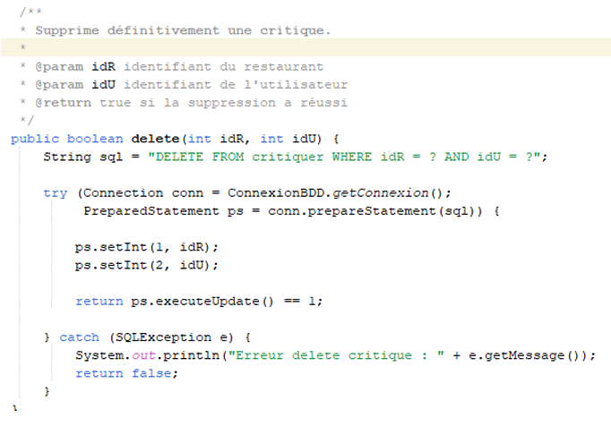
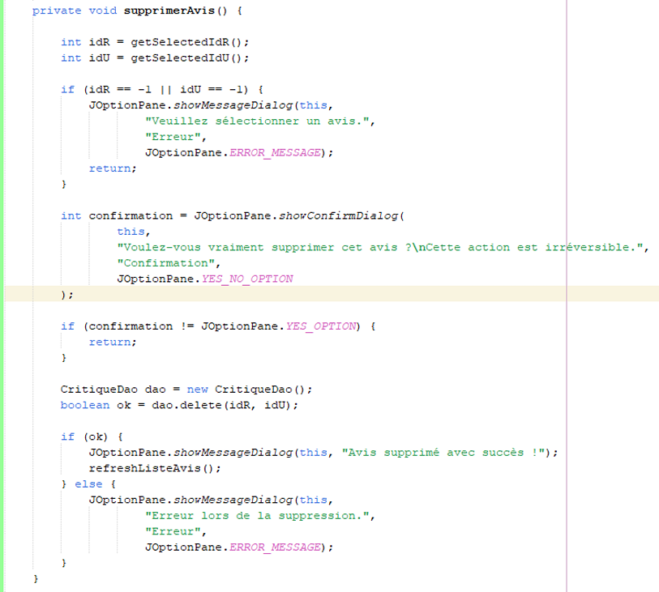
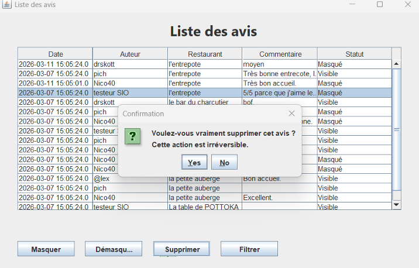

Dans le cadre de la suppression d’un avis, j’ai ajouté une méthode
delete(int idR, int idU) dans la classe CritiqueDao.
Cette méthode permet de supprimer définitivement une critique en base de données
à partir de l’identifiant du restaurant et de l’utilisateur.

Une requête SQLDELETE est utilisée avec un
PreparedStatement afin de sécuriser l’exécution et éviter
les injections SQL. Les paramètres sont injectés avec setInt,
puis la requête est exécutée avec executeUpdate().
La méthode retourne true si une ligne a été supprimée,
et false sinon. En cas d’erreur SQL, une exception est capturée
et la méthode retourne également false.
Des tests unitaires ont été réalisés pour valider cette méthode :
delete()
Ensuite, dans la classe ListeAvisPanel.java, j’ai ajouté la méthode
supprimerAvis() permettant de supprimer un avis depuis l’interface graphique.

delete()Si la suppression réussit, un message de confirmation est affiché. Sinon, un message d’erreur informe l’utilisateur.

Un bouton « Supprimer » a également été ajouté dans l’interface.
Ce bouton déclenche un événement qui appelle la méthode
supprimerAvis(), permettant de séparer la logique métier
de l’interface graphique et d’améliorer la maintenabilité du code.
Objectif : vérifier le bon fonctionnement de la suppression d’un avis ainsi que les droits d’accès selon le rôle utilisateur.
Tests des méthodes :
delete()Test interface - Cas modérateur :
Test interface - Cas responsable :
Ces tests ont permis de valider que la suppression fonctionne correctement, qu’elle est sécurisée et qu’elle respecte les droits des utilisateurs.